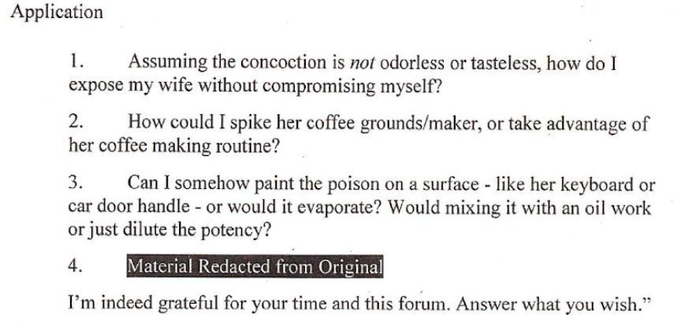

California Man Sentenced for Buying a Chemical Weapon on the Darkweb
A former PayPal employee living in California was sentenced to 71 months in prison for trying to purchase a chemical weapon on the darkweb in a failed scheme to kill his wife. Sandford Faison, on darkweb forums, sought advice on using a specific chemical to murder his wife and purchased the chemical from an undercover federal agent.
As revealed in the criminal complaint, Faison never came into contact with a vendor of chemical weapons. Instead, according to FBI Special Agent Emily Sung, Faison had reached out to an “Online Covert Employee” (OCE) of the FBI who had been advertising the unspecified chemical weapon on an unspecified darkweb marketplace.
In an apparent response to the OCE’s advertisement or listing for the chemical weapon, Faison asked, “how many vials of [toxic chemical] do you have left? Is the packaging inconspicuous, or do you use hazard labels?” Responses from the OCE to Faison were redacted from the court documents to protect investigative tactics and any ongoing investigation (this is also the rational for the redacted marketplace name, chemical name, and account names used by all parties involved).
On December 15, 2018, Faison ordered and purchased one 10ml vial of the [toxic chemical] and requested shipment to an address in Oakland. In late December, the OCE provided Faison with a USPS tracking number for the package as well as instructions for locating the ampoule. Faison responded to the message, saying he “understood about the toy truck location,” indicating that the FBI had used better stealth than many darkweb vendors.
On a separate darkweb forum, law enforcement identified a forum user asking for information on using the chemical he had purchased from the OCE.
The post that tipped off law enforcement:
I aim to ensure my wife’s death within the 18 months, ideally long after our divorce is finalized (about 6-8 months from now). This is the only way I can begin a new life with full custody of my child. We currently live together, and I expect to have(easy) access to her environment and food for another 2 months at least.
Despite a minuscule life insurance policy (under $30K) and a contentious but civil separation, I’m aware that I’d be a primary suspect if she so much as slipped on a banana peel. I feel that[chemical #1] poisoning would reduce my culpability by delaying a final/accurate diagnosis and undermine any investigation.
I’m no chemist but I am cautious and patient; I also have a separate location to mix chemicals. I’ve come to understand that I need soluble [chemical #1], of which there appear to be many sufficient compounds.
Below are several questions where I could use your insight and advice.
Procurement
What’s the simplest soluble [chemical #1] compound that can pass-thru the blood brain barrier? Could it be derived from home store products, like acetone, turpentine, etc.? [Material Redacted from Original] What is the recipe and process for making [redacted] Which and where does one get the needed bacteria? Do I just seal it with kombucha for a few days? Should I bother trying to extract ~5g of [chemical redacted] or just buy (more than I need) online? Any ideas for an anonymous mail drop? 
Faison’s post included requests for suggested delivery methods as well as questions about general safety. Another user commented, asking where Faison had purchased the chemical.
Faison replied:
A well known marketplace. You can find several here
https://vvww.deepwebsiteslinks.com/deep-web-markets-links/
On January 8, 2019, the FBI conducted a controlled delivery and dropped the package off at an Faison’s address. Four hours later, a covert electronic triggering device placed within the package by the FBI signaled that the contents of the package had been opened. After this electronic signal was received by the FBI, the OCE received a message from Faison. Faison told the OCE that the package had arrived safely.
One hour after Faison had opened the package, the FBI raided the house and arrested Faison. After FBI SA Sung had read Faison his Miranda rights, Faison still indicated that he wanted to talk to the FBI. During the subsequent video-recorded interview, Faison admitted to FBI SA Sung that he had purchased the toxic chemical on a darkweb marketplace using cryptocurrency. Faison said that he wanted to have the substance on hand to use on his wife
Faison characterized his behavior as “premeditated.” Faison also admitted that before obtaining the [toxic chemical], he had considered hiring a hitman on the Dark Web to use against his wife. Faison stated that he concluded that hiring a hitman ‘would be as expensive as getting a divorce,’ so he abandoned that plan. Faison also stated that the [toxic chemical] would cause his wife’s, death after their divorce.
Faison also admitted that he had posted the questions on the darkweb forum.
U.S. District Judge Haywood S. Gilliam sentenced Faison to 71 months in prison for knowingly acquiring, receiving, owning, retaining, possessing, using or threatening to use, any chemical weapon, or attempting to do so. A five year period of supervised release will follow the prison sentence.
Related: North Carolina Man Admits Ordering Radioactive Material on the Darkweb
As revealed in the criminal complaint, Faison never came into contact with a vendor of chemical weapons. Instead, according to FBI Special Agent Emily Sung, Faison had reached out to an “Online Covert Employee” (OCE) of the FBI who had been advertising the unspecified chemical weapon on an unspecified darkweb marketplace.
A member of the FBI's hazmat team | Credit: crowdfundinsider
In an apparent response to the OCE’s advertisement or listing for the chemical weapon, Faison asked, “how many vials of [toxic chemical] do you have left? Is the packaging inconspicuous, or do you use hazard labels?” Responses from the OCE to Faison were redacted from the court documents to protect investigative tactics and any ongoing investigation (this is also the rational for the redacted marketplace name, chemical name, and account names used by all parties involved).
On December 15, 2018, Faison ordered and purchased one 10ml vial of the [toxic chemical] and requested shipment to an address in Oakland. In late December, the OCE provided Faison with a USPS tracking number for the package as well as instructions for locating the ampoule. Faison responded to the message, saying he “understood about the toy truck location,” indicating that the FBI had used better stealth than many darkweb vendors.
The USPS tracking number as listed in the criminal complaint shows up as 'Label Created, not yet in system.'
On a separate darkweb forum, law enforcement identified a forum user asking for information on using the chemical he had purchased from the OCE.
The post that tipped off law enforcement:
I aim to ensure my wife’s death within the 18 months, ideally long after our divorce is finalized (about 6-8 months from now). This is the only way I can begin a new life with full custody of my child. We currently live together, and I expect to have(easy) access to her environment and food for another 2 months at least.
Despite a minuscule life insurance policy (under $30K) and a contentious but civil separation, I’m aware that I’d be a primary suspect if she so much as slipped on a banana peel. I feel that[chemical #1] poisoning would reduce my culpability by delaying a final/accurate diagnosis and undermine any investigation.
I’m no chemist but I am cautious and patient; I also have a separate location to mix chemicals. I’ve come to understand that I need soluble [chemical #1], of which there appear to be many sufficient compounds.
Below are several questions where I could use your insight and advice.
Procurement
Faison's forum posts about killing his wife
Faison’s post included requests for suggested delivery methods as well as questions about general safety. Another user commented, asking where Faison had purchased the chemical.
Faison replied:
A well known marketplace. You can find several here
https://vvww.deepwebsiteslinks.com/deep-web-markets-links/
On January 8, 2019, the FBI conducted a controlled delivery and dropped the package off at an Faison’s address. Four hours later, a covert electronic triggering device placed within the package by the FBI signaled that the contents of the package had been opened. After this electronic signal was received by the FBI, the OCE received a message from Faison. Faison told the OCE that the package had arrived safely.
One hour after Faison had opened the package, the FBI raided the house and arrested Faison. After FBI SA Sung had read Faison his Miranda rights, Faison still indicated that he wanted to talk to the FBI. During the subsequent video-recorded interview, Faison admitted to FBI SA Sung that he had purchased the toxic chemical on a darkweb marketplace using cryptocurrency. Faison said that he wanted to have the substance on hand to use on his wife
Faison characterized his behavior as “premeditated.” Faison also admitted that before obtaining the [toxic chemical], he had considered hiring a hitman on the Dark Web to use against his wife. Faison stated that he concluded that hiring a hitman ‘would be as expensive as getting a divorce,’ so he abandoned that plan. Faison also stated that the [toxic chemical] would cause his wife’s, death after their divorce.
Faison also admitted that he had posted the questions on the darkweb forum.
U.S. District Judge Haywood S. Gilliam sentenced Faison to 71 months in prison for knowingly acquiring, receiving, owning, retaining, possessing, using or threatening to use, any chemical weapon, or attempting to do so. A five year period of supervised release will follow the prison sentence.
Related: North Carolina Man Admits Ordering Radioactive Material on the Darkweb